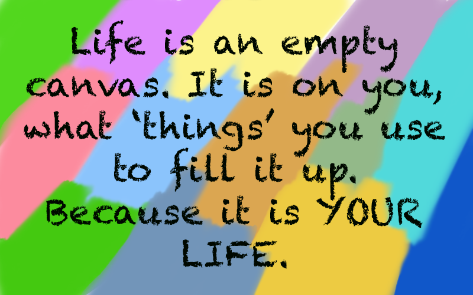

Archive
Most viewed
Most heard
Life is full of possesions. One cannot survive without possesions. From a piece of the Wright brother's plane to a child’s sugar egg, today: Things! Important things, little things, personal things, things you can hold and things that can take hold of you. No matter how much one denies, one does get connected to things around.
The speakers of 'Things' mention various examples about possessions. You might define the former as objects, like an autograph of Abraham Lincoln; however, that is not the only case. Possession might also inlcude a physical memory 'I stood right in the spot where Lincoln signed the autograph.' Some might define this as a possession.
My mom and I were having a discussion about things the other day, about how I get very attached to "things" and she for the most part doesn't. Even when we're cleaning out my room, . I'm always the one who wants to keep something because of its sentimental value while my mom is more than happy to get rid of it if it hasn't been touched or even missed.

A similar topic was brought up in the podacast. A mention about touching the cloth peice of the first moon trip happened to be talked about in the podacast. On one hand, some got a feeling of being on the moon, one of them felt nothing. Irrespective of how hard she tried, nothing came to her. In my opinion, attachment to a specific object is psychological and not physical.
Something similar happened to me when I moved from India to United States. Having lived in India for almost 17 years, I had a lot of things, from clothing to shoes to accessories, birthday presents to cards. One names it, I had it. And surprisingly, I wanted to bring every single article with me. It took me a while to come to terms with reality about leaving things behind; soon came back to earth.
The moment I accpeted the truth, I had let go of every single feeling towards those articles. Now if I were to look back and get them with me, I probably wouldn't.
It depends on the individual, they may want to let go or not. They decide the 'things' that stay in their life. Simply because it is their life.